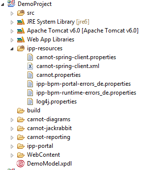

Error messages like login errors or authentication errors thrown by the engine, are also residing in locale specific property files. Extract the following property files:
In case property files for your language already exist, edit the files with your locale extension. Otherwise copy the default or the English language files and rename them using your own locale. Edit the files and translate the error code accordingly. Chapter List of Error Codes provides a general overview over error code used for Stardust.
Now simply copy these files to the ipp-resources folder of your Web project, e.g.:

Figure: Localized Error Code Property Files
The translated code in these files are then used for displayed error messages in the Portal.